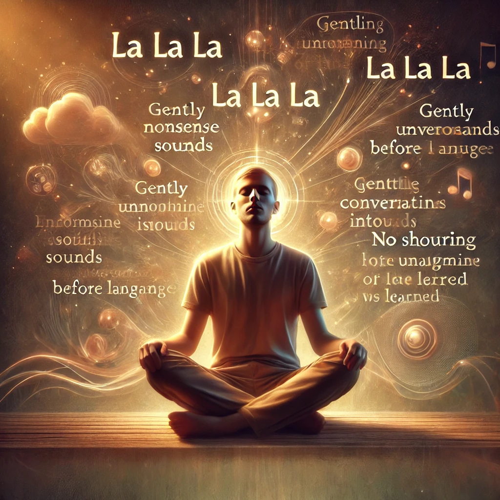

تأمل ديفافاني
في هذا التأمل الذي يستمر لمدة ساعة، تتحرك لغة لطيفة وغير مألوفة من خلال الممارس الذي يصبح كوعاء فارغ. يساهم في استرخاء العقل بشكل عميق ويخلق سلاماً داخلياً. إذا تم القيام به في الليل قبل النوم، فإنه يساهم في نوم عميق.
كيفية الممارسة: قم بتنزيل الصوت واتبع هذه الخطوات لتأمل.
المرحلة الأولى: 15 دقيقة
اجلس بهدوء بينما الموسيقى تُعزف.

المرحلة الثانية: 15 دقيقة
ابدأ في إصدار أصوات غير مفهومة، مثل "لا لا لا"، واستمر حتى تظهر أصوات غريبة تشبه الكلمات. يجب أن تأتي هذه الأصوات من الجزء غير المألوف من الدماغ الذي كان يستخدمه الإنسان كطفل قبل تعلم الكلمات. اجعل نبرة صوتك هادئة وودية؛ لا تصرخ أو تبكي أو تضحك.
المرحلة الثالثة: 15 دقيقة
قف واستمر في هذه اللغة الغريبة، ودع جسمك يتحرك بلطف بتوافق مع الصوت. إذا كان جسمك مسترخياً، فإن الطاقة الدقيقة ستخلق حركة عفوية وغير منظمة.

المرحلة الرابعة: 15 دقيقة
استلق وابقَ ساكناً. أطلق الأفكار واسترح بعمق، وامتص الطاقة والهدوء الناتجين عن التأمل.